Behavior Change
Behavior change refers to efforts put in place to change people’s personal habits and attitudes, to prevent disease [1].
As a part of I507, I was tasked to use a health monitoring application and change a behavior. The idea was to understand what it takes to change a behavior so that we can design better applications for other people.
In the context of Health (the topic of our class), behavior refers to a person’s beliefs and actions regarding their health and well-being. They are influenced by a person’s environment. Positive behavior promotes health and prevents disease while the opposite is true for negative behaviors.
I have chosen to monitor and change my sleeping habits. Since I started my master’s education, I have rarely slept for longer than 6 hours a night on average. Through this blog post, I will attempt to document my experience using a sleep tracker application on my phone over the course of 4 weeks and see if I make improvements to my sleep schedule.
1 Background and Theory
1.1 About me
The following is a screenshot from the “Samsung Health” application which shows the average sleep statistics this year from the months of January through September. It is evident that I sleep very late in the night.
{kind=link}
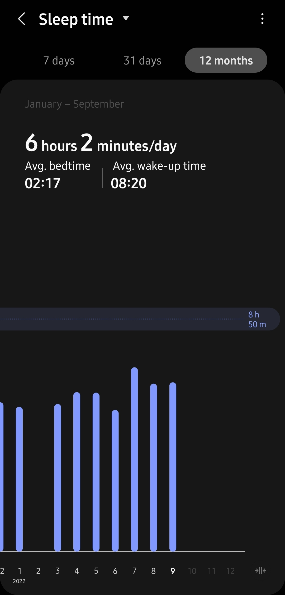
The months of January through May were stressful and hard as I had taken three core subjects (9 credits) which were all essential to satisfy my degree requirements. I also had the added pressure of landing a summer internship.
In the summer (May - August), I was working full-time on my internship and worked part-time as a research assistant on campus, which was again called for long working hours.
The fall semester I decided to continue my internship and the research assistant-ship part-time (35 hours a week combined) along with two 13-week courses. Which (sigh) made it harder for me to manage my time again.
Hopefully I would be able to break this cycle, with the help of some analytics and science.
1.2 Behavioral Model - SCT
Social Cognitive Theory (SCT) discusses how individuals acquire and maintain behavior based on internal and external social interactions [2]. SCT takes into account a person’s experiences to factor into whether behavioral change will occur.
{kind=link}
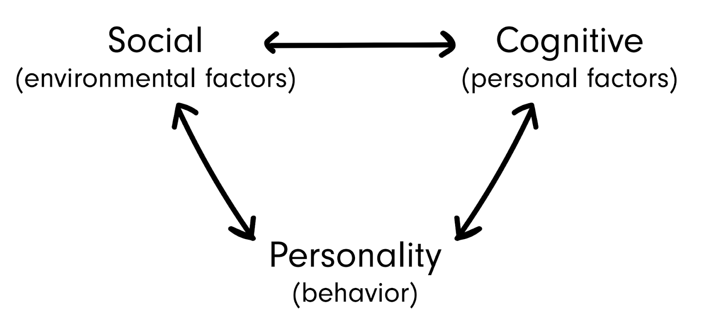
There are six constricts developed as a part of SCT, I will connect each of those with my situation.[2]
- Reciprocal Determinism : This refers to the fact that behavioral change is dynamic and related to an individual’s personality and the environment they are in.
- Behavioral Capability : This refers to a person’s ability to perform a behavioral change through knowledge and skills. I have identified the behavior I need to change and the negative impact it has on my performance. I know what to do (sleep early) and how to do it (manage time through the day in a better way).
- Observational Learning : Looking at others and emulating their behavior or inculcating their positive habits. A close friend of mine prioritizes sleep and mental well-being over all else. I engaged with them to understand how they manage their time and schedule. We set up a few study sessions where I sat with them while they worked through the day to understand their style of working.
- Reinforcements : Internal or external responses to a person’s likelihood of continuing or discontinuing a behavior. I am hoping that the application would provide positive reinforcements to keep up the behavior change until it becomes a habit. The only way I would break the behavior would be if I am overwhelmed by the schedule.
- Expectations : Refers to the anticipated consequences of a person’s behavior. My primary expectation is to sleep and wake up on time, to have a more energetic morning.
- Self-Efficiency : This refers to the level of person’s confidence in their ability to successfully perform a behavior. I’m not so confident at the moment (not gonna lie). We’ll see how it goes.
2 Choice of Monitoring Application
There are two main things I look for while downloading an application: 1) the number of downloads, and 2) the average rating. “Sleep as Android” seemed to be the best one out of the available applications. I did not go into the available features and the details regarding the application before deciding to download it. The fact that it was also tagged as an “Editor’s choice” made the decision easier.
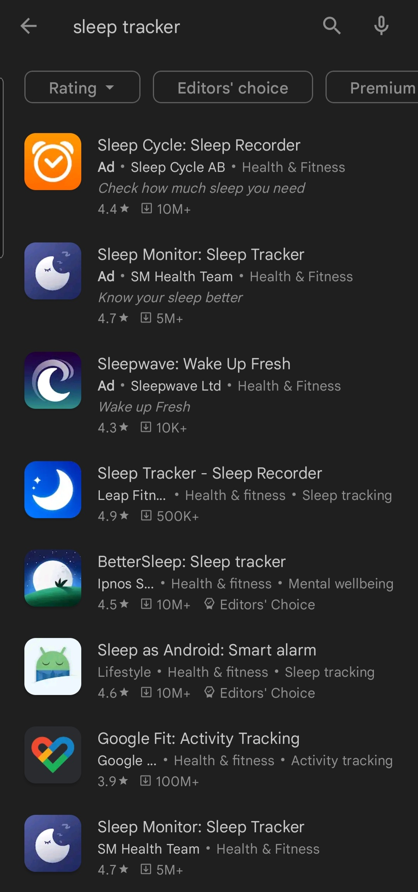 |
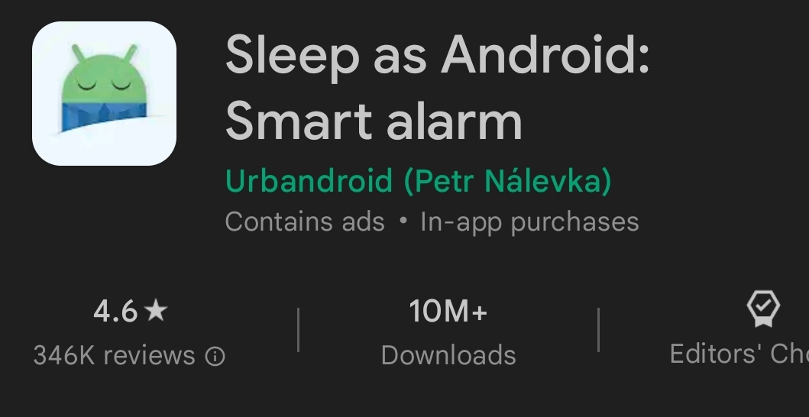 |
{kind=link}
{kind=link}
3 Onboarding Experience
The first time you launch the application, you are greeted with a swipe-able screen showing and describing the features of the application. I have personally never swiped all the way to the end of such tutorials on any app. So, when I first downloaded the app too, I skipped after the first few slides. Perhaps the tutorial were a video, then I would’ve watched it instead of the slides.
Few of the screenshots describing the available features, other than the primary feature of tracking sleep.
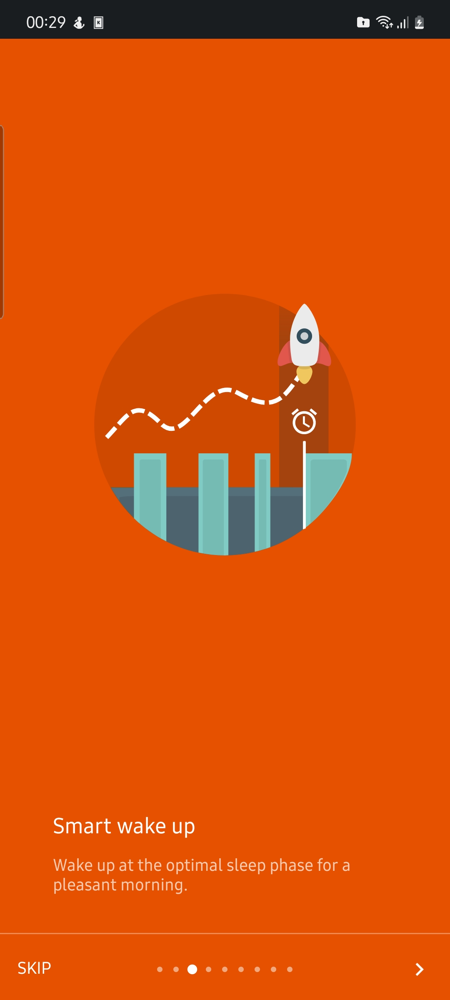 |
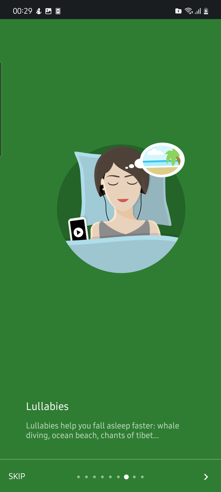 |
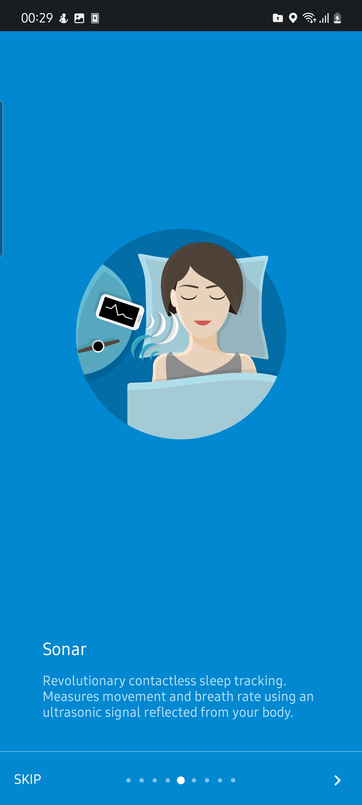 |
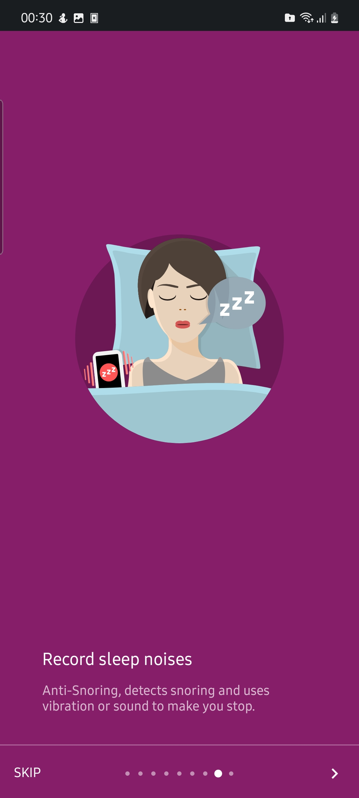 |
{kind=link}
{kind=link}
{kind=link}
{kind=link}
- Smart wake-up feature sounds interesting. The app, apparently tracks your sleep patterns and finds the right time to wake you up, which is outside the REM sleep duration.
- I listen to some podcast before I fall asleep, and I am not really used to having music or ASMR playing in the background while sleeping. So, I would pass on the lullabies feature.
- I wonder how much battery the sonar feature would consume through the night.
- I have not been told that I snore in my sleep, except for when I am exhausted. So, hopefully the phone proves I don’t snore.
The app requires permissions to access physical activity, maybe that is to keep of track of movements during the sleep which would aid in its tracking ability. Once the required permission is given, you are taken to the button which would ask you to set an alarm.
{kind=link}
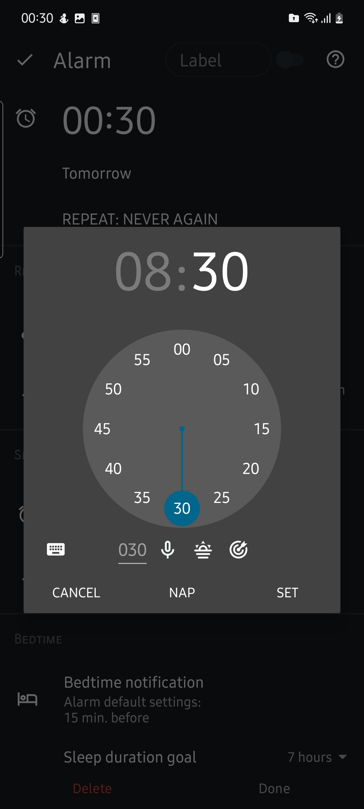
- The dial is easy to understand, you can set the hour and minute for when you would like to wake up.
- The little numeric input area turns out to be a faster way to set the alarm time, 730 transforms to 07:30AM and 215 transforms to 21:05
- The microphone button sets the alarm with your voice.
- The third button asks for permission to access your location data to set the alarm to the time of sunrise (I don’t think I’d ever need that feature!)
- The last button sets the alarm to your target wake-up time.
The app also lets you set a sleep duration goal (7 hours for example) and sends you notifications 15 minutes (configurable to other durations) before your bedtime.
{kind=link}
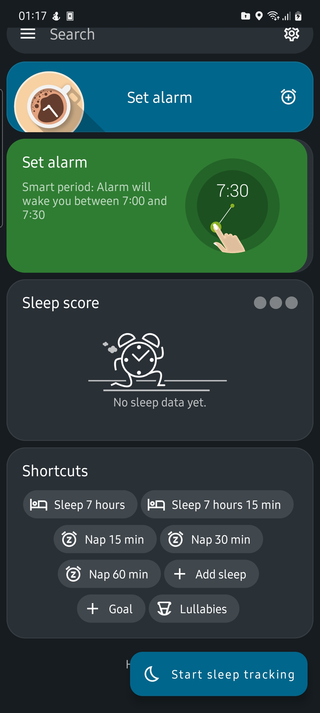
The home screen of the app has the features to set an alarm, tutorial slides and statistics of the most recent sleep tracking activity and the averages.
4 Tracking and User Experience
4.1 How do you track?
Tracking is done based on the alarm time (wake-up time) you set on the app. I had configured the alarm to repeat every morning and also set the goal sleep hours. With these settings, the app reminds you to sleep before your projected bedtime by sending a notification which vibrates the phone. There is an option to snooze the reminder to sleep, and the app will remind you again in 15 minutes. I felt that this feature of vibrating the phone until you actually go to sleep and start tracking is very helpful as it forces you to think about going to sleep every time the phone vibrates.
In the morning, the alarm rings and wakes you up to the preset ringtone and shows you the duration of sleep and the efficiency of your sleep along with a 5-star scale for you to rate your sleep.
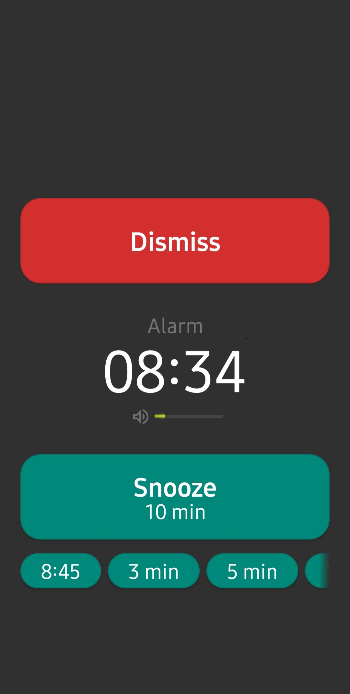 |
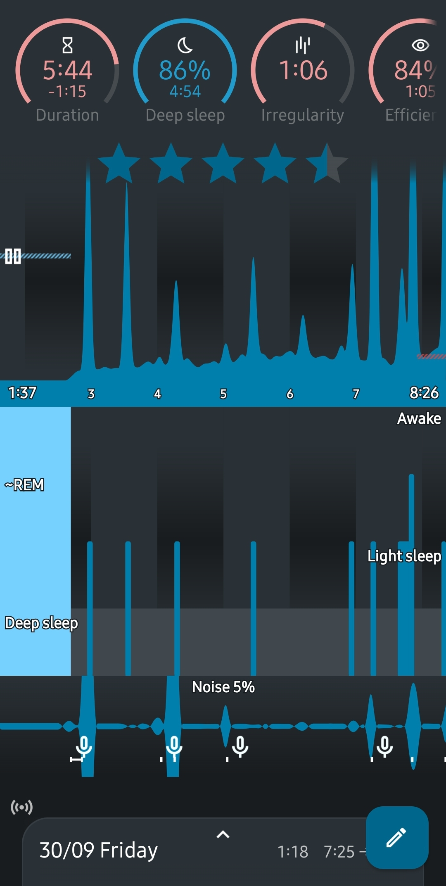 |
{kind=link}
{kind=link}
It is hard to interpret the graph, we do not know what the highs and lows of the graph mean. But, documentation tells us that :
- The first graph represents the “Actigraph” [3]. It shows the intensity of your nightly movements. The higher the peak, the more you’ve been moving.
- The second graph represents the “Hypnograph” [3]. It represents the various stages of sleep based on the intensity of color of the peaks.
- The third graph represents the “Noise graph” [3]. It shows how much noise (sleep talking, snoring, misc) noises were recorded through the night.
In the initial 2 weeks of tracking, I was not aware of the fact that not all features are enabled by default.
-
Automatic sleep tracking is disabled by default, it is a feature which automatically starts tracking your sleep without needing to manually start it. This includes the feature of sleep time estimates when the tracker is not turned on by default. All these estimates are done based on your sleep history, patterns of sleep and alarm time.
-
Sonar or accelerometer sensors need to be enabled for the tracking of movements and noises (includes snoring) during your sleep. The app starts recording when it detects any movement or noise and saves it on your phone and shows the same on the homepage for you to review it later.
I only realized that they aren’t enabled when I exported the tracking data onto my laptop and saw that these fields are marked as unset. I believe a thorough review of the documentation is needed before you fully understand how to best use the app.
4.2 Statistics and Visualizations
The app provides a wealth of data analysis using all the data it tracks. Starting with the summary statistics which is available on the home page. This is what I end up looking at most of the time.
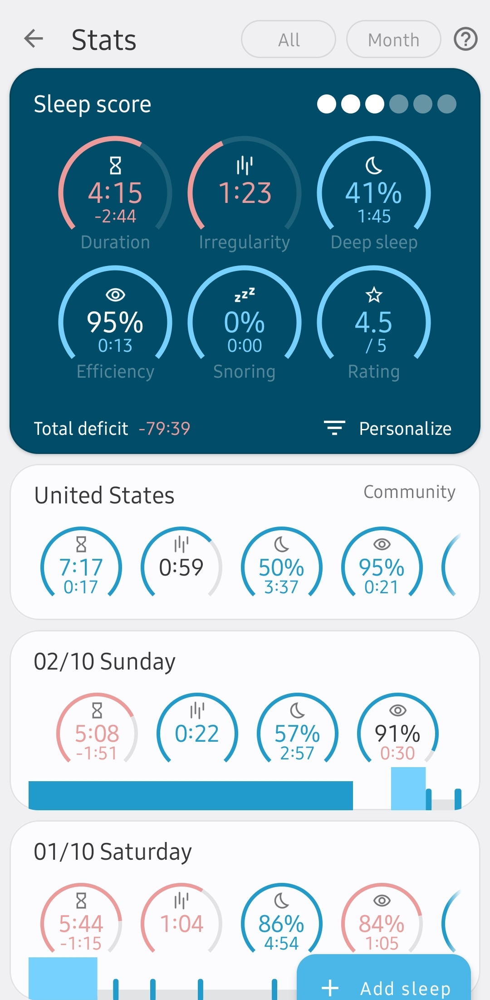
{kind=link}
In the past month of September. I have slept for an average of 4 hours only. This is 2 hours less than my average before using this app and 3 hours less than the average of the United States. Obviously, I failed miserably in trying to improve my sleep cycle. To understand the meaning of all the metrics shown in the first graph, we revisit our user manual [3] and turn to the sleep score section.
- Duration : I slept for an average of 4 hours 15 mins. Since I had set the target sleep duration to 7 hours, it shows us a deficit of 2 hours 45 minutes.
- Irregularity : How irregular your sleep is. Variance of your mid-sleep hour. The documentation also tells us what is healthy (under 0.5 hours) and what is not (over 1 hour). Clearly what I’m doing is unfavorable.
- Deep Sleep : How long you’ve been in deep sleep compared to the total sleep duration. Healthy: over 30% and Unfavorable: under 20%. This is pretty good, my average is 40% which is healthy.
- Efficiency : How long you’ve been actually sleeping vs. being in bed. Mine is a healthy average of 95%, this is true as I don’t stay awake after I start the sleep tracker because I know that I’m supposed to be sleeping then. So, this is one of the positive changes.
- Snoring : I rarely snore, so 0%, yay!
- Rating : I never rated my sleep out of 5 stars, so this statistics is meaningless to me. In the end it shows us how many hours of sleep I have lost over the period in consideration (1 month) - over 80 hours!
The app has this cool feature where it shows the summary statistics from all the countries. Each country has a count of users who have agreed to share their data with the app owners to be a part of a “SleepCloud Study”[4]. The funny part is how you have to keep scrolling for a minute to reach the end and there is no search feature to find a country of interest.
{kind=link}
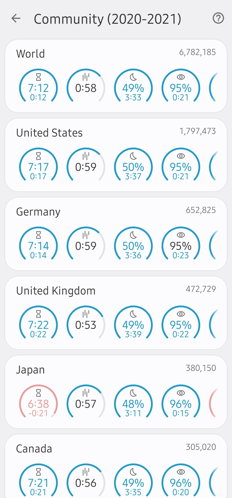
Some of the other graphs that I find useful are :
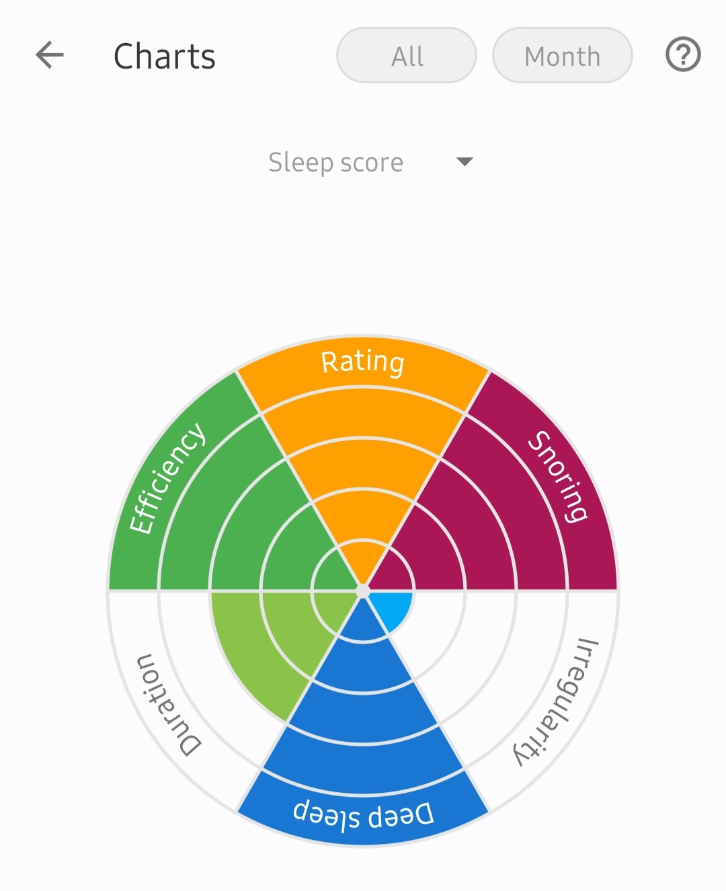 |
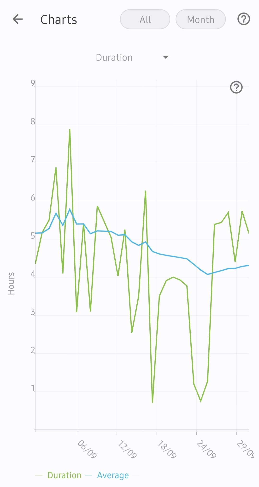 |
{kind=link}
{kind=link}
The chart on the left is good representation of your sleep cycle. The goal is to ensure that the graph is full or all the colors are filled up. And, the graph on the right shows a steady decline in the number of hours I have slept. So, looking at these graphs I know that if I should just focus on sleeping on time and that there are no other issues.
The graphs are color-blind friendly and there is a clear distinction between the shades of blue and red used to differentiate healthy and unfavorable patterns. Only if you have the condition - Monochromacy/Achromatopsia, you will not be able to see the difference in colors, but you would still understand all the other graphs as they are coded based on intensity of color.
4.3 Validation of Tracking Data
The app (Sleep as Android) has a definite starting point for sleep tracking, when I manually start the tracker. And, a definite ending point, when the alarm rings and I save the tracked information. I can say with certainty that the duration tracking information is accurate. Whereas the general purpose activity tracker app - Samsung Health, tracks the sleep hours based on my phone usage. It checks for the periods of time when the phone is not used during the night. Sometimes I use the phone right after I wake up and just lay in bed, idle (contemplating life), before I get out of bed. I suppose all this gets added up as sleep time on the Samsung Health app.
At the time of writing this blog, the Samsung Health app shows an average sleep duration of 6 hours and 24 minutes over the past month (2nd September 2022 - 2nd October 2022). Whereas the dedicated sleep tracking app - Sleep as Android, shows an average of 4 hours and 15 minutes. This is a huge difference. I always thought that 6 hours of sleep was good enough accounting for all the work I have to do on a day-to-day basis. This way, using a dedicated sleep tracker app is a definite eye-opener and shows you exactly and accurately all that is wrong.
4.4 Implications of Tracking
5 References
[1] Wikipedia contributors. (2022, August 29). Behavior change (public health). Wikipedia. Retrieved September 25, 2022, from https://en.wikipedia.org/wiki/Behavior_change_(public_health)
[2] The Social Cognitive Theory. (n.d.). Retrieved September 25, 2022, from https://sphweb.bumc.bu.edu/otlt/mph-modules/sb/behavioralchangetheories/behavioralchangetheories5.html
[3] User Manual. (n.d.). Sleep as Android. Retrieved September 27, 2022, from https://docs.sleep.urbandroid.org/
[4] Sleepcloud Study. (n.d.). Sleep as Android. Retrieved September 27, 2022, from https://sleep.urbandroid.org/sleepcloud-study/